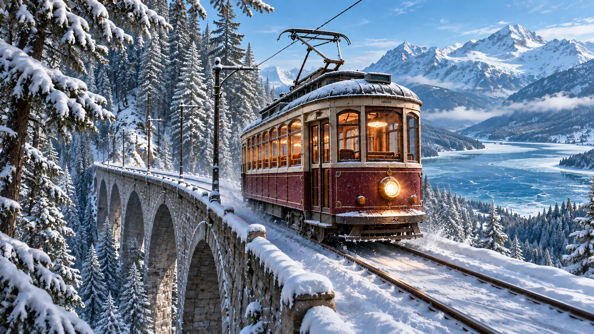
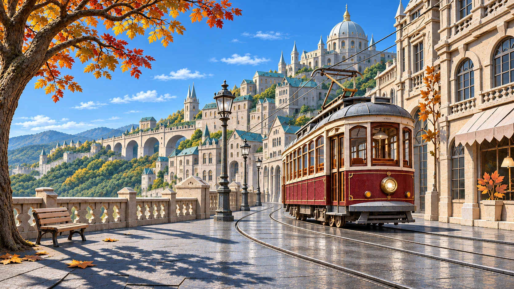
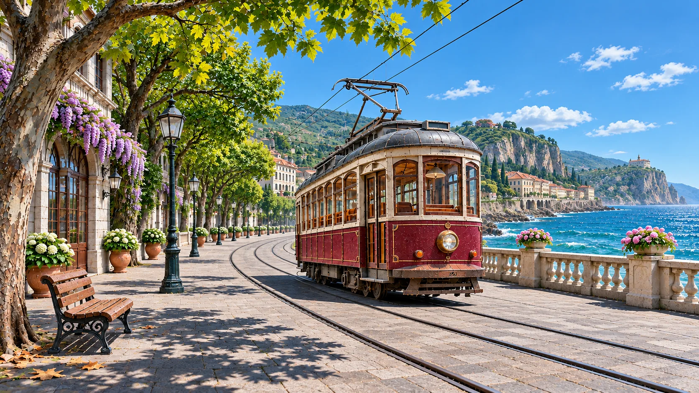

01 / ВИДЕО
Короткая видеосцена
Готовый кадр становится видеосценой: трамвай продолжает путь по заснеженному виадуку.
Соединяйте промпты, референсы и инструменты генерации. Создавайте изображения, видео и звук, сохраняйте настройки и используйте готовые процессы в новых проектах.
01 / НАЧНИТЕ С ИДЕИ
Возьмём один трамвай. Промпт задаёт маршрут, референс сохраняет героя, а стиль объединяет кадры. Ноды передают эти данные генератору: меняя место в промпте, можно отправить того же героя в город, горы или к морю.
«Возьми трамвай с референса. Сохрани его внешний вид и помести на снежный виадук в горах при дневном свете».
Холодные оттенки, тёплый свет, кинематографичный кадр.
Превращает промпт, референс и стиль в готовое изображение.

Этот кадр можно передать следующей ноде: например, генератору видео.
В промпте меняется маршрут. Трамвай остаётся узнаваемым, а дневной свет и визуальный стиль сохраняются.


Готовый кадр может стать входом следующих нод: видео, звук или сценарий
Промпт, референс и стиль поступают в одну ноду.
AI-модель использует описание и визуальные ориентиры, чтобы создать изображение.
Готовое изображение можно использовать отдельно или передать следующей ноде.
Изображение →02 / ВОЗМОЖНОСТИ
Готовый кадр — основа для дальнейших генераций. Продолжите идею в видео, добавьте звуковую атмосферу или подготовьте сценарий — материалы останутся частью одной истории.
Готовый кадр становится видеосценой: трамвай продолжает путь по заснеженному виадуку.
Звонок, ритм колёс и ветер задают настроение маршрута.
Трамвай выходит из тени елей на открытый виадук. Камера плавно приближается к трамваю. Впереди — залитые солнцем снежные вершины.
Место: горы · Свет: день · Камера: плавный наездТе же решения превращаются в понятное описание кадра.
03 / ПОПРОБУЙТЕ САМИ
Пройдите три шага: подключите референс трамвая, измените место или свет и посмотрите, как готовый кадр может стать основой для видео.
Шаг 1. Нажмите «Использовать этого героя», чтобы добавить референс в процесс.
Его цвет и форма сохранятся при изменении сцены.
Изменится окружение выбранного кадра.
Изменится освещение, место сохранится.
Начнём с готового референса. Затем вы сможете выбрать место и время суток.
Или соедините зелёные кружки перетаскиванием.Изображение + инструкция «Плавный наезд» → видеоролик
СЛЕДУЮЩАЯ НОДА / ВИДЕО
Видео создано из дневного горного кадра. Выбранные настройки остаются в схеме выше.
Шаблон запомнит место и свет. Его можно применить снова — без повторной настройки. Сохранение работает только в этом браузере.
Пока нет сохранённого шаблона.
04 / ДЛЯ КОМАНДЫ И БИЗНЕСА
Соберите рабочую схему один раз и развивайте её вместе с командой: от первого референса до серии материалов в общем стиле.
Используйте общие референсы и настройки, чтобы материалы разных форматов выглядели частью одного проекта.
Возьмите удачную схему за основу следующей задачи: замените исходные материалы и продолжайте работу.
Обновляйте отдельный шаг — например, место, свет или формат — сохраняя остальные решения.
Объединяйте идеи и инструменты в понятную схему. Создавайте контент для своих задач или выстраивайте общий процесс для команды.